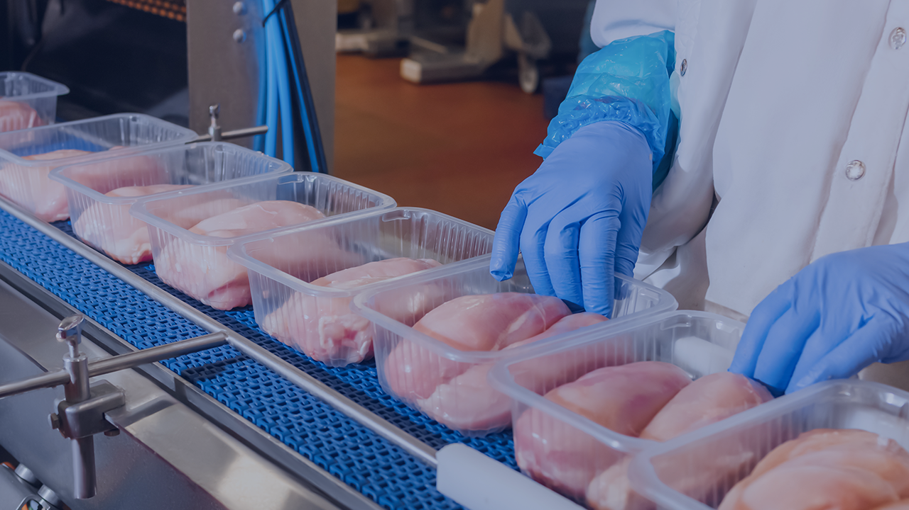

Common protein formats
- Chicken nuggets
- Jerky
- Raw beef trim
- Sausage patties
- Formed burgers
- Prepared protein trays
Protein
GreyscaleAI helps protein producers detect foreign material, monitor inspection activity, understand product quality, and see what is happening across lines and plants.
GreyscaleAI helped distinguish true bone from cartilage, ligament, tendon, and normal poultry variation while supporting stable detection across shifts, products, and plants.
Production challenges
Protein applications can carry natural density variation, bone-related concerns, package noise, and quality conditions that change by cut, grind, forming process, and temperature state. Each product and package should be reviewed for the specific inspection goal, line speed, and application conditions.

Foreign material review with image evidenceDensity shift or product breakage can be reviewed in the same workflowInsights for protein
Use image history and inspection context to investigate what happened on the line.
Understand recurring issues, quality shifts, and production patterns across machines and lines.
Help corporate QA and operations teams compare activity across authorized facilities.
Common questions
Some bone-related contaminants can be detected, but performance depends on product density, grind, temperature state, package format, and the size and composition of the material. Protein applications should be validated with the actual product and target set.
Natural variation is common in protein, which is why image review and product-specific tuning matter. GreyscaleAI pairs detection with event context so teams can distinguish recurring process variation from higher-risk events.
In many protein applications, yes. The same image stream can support foreign material workflows alongside checks for shape, breakage, missing product, or grading-related conditions where the application is a fit.
Featured case study
See how AI image analysis supports more stable detection across poultry products, shifts, and plants.
Use the machine spec sheet archive as a starting point before discussing line fit and application conditions.